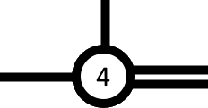
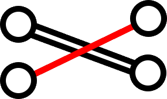
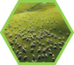
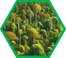

The settlers of Catan have decided to upgrade their transportation system. They want to construct a set of hashi (bridges), to speed up commerce over their hexagonal lands. Whereas the old roads traveled around and between the resource tiles, these new bridges will jump from tile-center to tile-center. All participating tiles have circles (with numbers) at their landing points. No bridges go anywhere else.
All bridges have 1 or 2 lanes. The circled numbers count the total number of lanes reaching that tile, across all bridges. 
Bridge spans may not intersect mid-span. 
Bridges may connect neighboring tiles or jump
to more distant tiles. They always align
with a hexagonal axis.
The specific tile types matter. The two ends of a bridge will always be different resource types.
Furthermore…
Mountains
Due to their heights, all bridges that connect to or from a mountain must have two lanes. Furthermore, no bridge can span over another mountain tile – even those not participating as bridge landings.
Pastures
To reduce traffic danger to sheep, any bridges landing in a pasture may only have one lane.
Forests
To keep logging accessible, no spur in the bridge system may terminate at a forest.
Hills and Fields
The bridge system is divided into regions, each identified by a single letter. Boundaries occur anywhere a hill is connected by bridge to a field.
Read the region letters in reading order across the map.